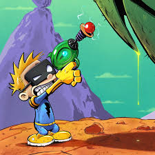

| Aluno 1 | Aluno 2 | Aluno 3 |
|---|---|---|
| Araci do Precioso Sangue | Asteroide Silverio | Cafiaspirina Cruz |
| 8 | 7 | 5 |
| Rodapé 1 | Rodapé 2 | Rodapé 3 |
Astronauta Spiff

Profissão: Astronauta Intergalático, Explorador de Mundos Desconhecidos
Base Principal: Quarto Secreto, Subúrbio da Terra, Sistema Solar
Comunicações: (55) 21 99999-Spiff
Email Secreto: spiff.the.explorer@galaxymail.com
Resumo
Um intrépido e imaginativo astronauta com vasta experiência em exploração espacial solo e em missões críticas a planetas inóspitos. Proficiente em pilotagem de naves espaciais de construção própria, análise de fenômenos alienígenas e resolução criativa de problemas em ambientes extraterrestres.
Experiência Profissional
Astronauta Intergalático e Comandante de Missão Solo
Várias Expedições (Contínuo)
- Pilotou e manteve diversas naves espaciais de design exclusivo, incluindo a "Destruidora de Cartazes" e a "Vingadora de Júpiter".
- Realizou extensas pesquisas em planetas desconhecidos, catalogando flora, fauna e geologia exóticas.
- Desenvolveu protocolos de comunicação rudimentares com várias espécies alienígenas.
- Sobreviveu a condições ambientais extremas, incluindo tempestades de glitter cósmico.
- Documentou descobertas científicas inovadoras, incluindo a existência de "Smoggles" e a natureza da "Energia Zum-Zum".
- Infiltrou-se em planetas hostis e resgatou missões espaciais perdidas.
- Vice-campeão intergalático de cara-coroa.
Habilidades Técnicas Especiais
- Acrobacias em gravidade zero
- Comunicação interespécies
- Construção de bases lunares improvisadas
- Voo solo de espaçonaves
- Negociação com espécies extraterrestres
- Navegação interestelar (baseada em intuição e mapas desenhados à mão)
- Análise de atmosferas alienígenas (método: "cheirar e ver")
Habilidades Pessoais
- Imaginação hiperativa
- Pensamento criativo e resolução de problemas não convencionais
- Determinação inabalável
- Adaptabilidade a situações inesperadas
- Autoconfiança (às vezes excessiva)
Educação (Auto-Didata e Experiencial)
- Doutorado em Exploração Interdimensional e Defesa Contra Alienígenas Malignos
- Mestrado em Viagem Hiperespacial (com honras)
- Universidade Estelar de Calvin — Ciências da Galáxia
- Academia Estelar de Calvin — Diploma em Engenharia Espacial e Aventuras
Currículo incluiu estudos avançados em:
- Teoria da Propulsão a Jato de Papelão
- Linguística Alienígena Intuitiva
- Táticas de Fuga e Evasão Escolar Espacial
- Astronomia de Quintal Avançada
- Sobrevivência com Lancheiras e Suco de Limão
Idiomas
- Terráqueo
- Glurpiano
- Dialetos de Saturno